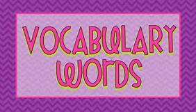

Home
Portfolio
Vocabulary
About Me
This is my Vocabulary Page!

- Sprites- A graphics object that can be moved on top of or behind a background.
- Script- A set of instructions. In Scratch a script is a single stack of blocks belonging to one sprite or to the stage.
- Iteration-Repeating a step-by-step procedure several times; also used to refer to single execution of that repetitive procedure.
- Integrated Development Environment (IDE)-Provides a developer with a way to create a program, run the program, and debug the program all within one application.
- Boolean Expression-Evaluates to either true or false; used in the conditional of an if-structure.
- Execute-To run a program or a single instruction.
- Bug-Part of a program that causes an error or undesired output.
- Debugging-The process of figuring out why code doesn't behave as expected and eliminating bugs to make it work as desired.
- Central Processing Unit (CPU, or core)-The part of the computer that executes one instruction at a time.
2.1.2 Vocabulary
- Browser Tab:
A separate viewing pane within a browser window, many of which may be open at once, allowing a user to switch quickly between web pages.
- History:
Information stored by a browser about the web resources that it has requested.
- Browser:
A piece of software that renders web pages and allows users to view resources on a network.
- Client application:
A program that makes use of another piece of software or set of data; for web interactions, the web browser is usually the client application.
- Client machine:
A machine running a client application.
- TCP/IP:
The dominant set of protocols for the transfer of data over the Internet.
- Redundancy:
The property of having many resources or components which all serve identical purposes.
- URL:
Uniform Resource Locators are strings of characters that contain information about how to access a resource over the Internet.
- Parameter:
A value used in a model.
- Port:
A subset of network traffic received at an IP address, specified by a port number. Traffic at any particular port number is usually listened to by a particular type of application or process that is being accessed on a server.
- Filter:
A program or device that allows or passes some packets through while blocking others based on predetermined criteria.
- Cookie:
A small piece of data stored on the client machine that can only be accessed by the server that issued it.
- Add-on:
A piece of software designed to enhance the capabilities of another piece of software.
- Third-party cookie:
A cookie that is stored on a client computer by a domain other than the one that is currently requesting resources.
- HTML:
HyperText Markup Language is the most common language used for creating web pages.
- CSS:
Cascading Style Sheets contain hierarchical information about how the content of a web page will be rendered in a browser.
- JavaScript:
A client-side scripting language used to write programs that are embedded in web pages, often to make a web page more interactive.
- Web crawler:
A softbot responsible for following hyperlinks throughout the Internet to provide information for the creation of a web index.
- Web index:
A database that stores information about web content.
- Query:
A request for information.